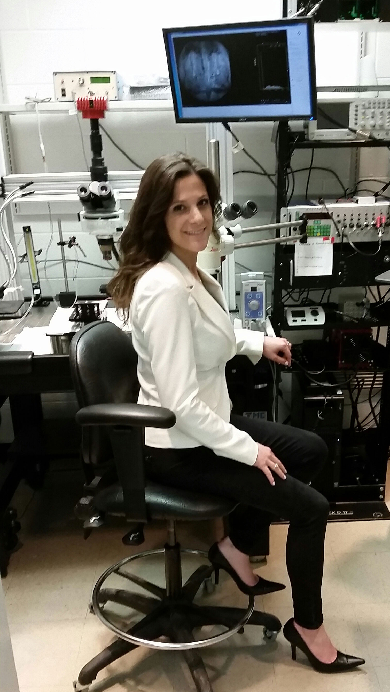
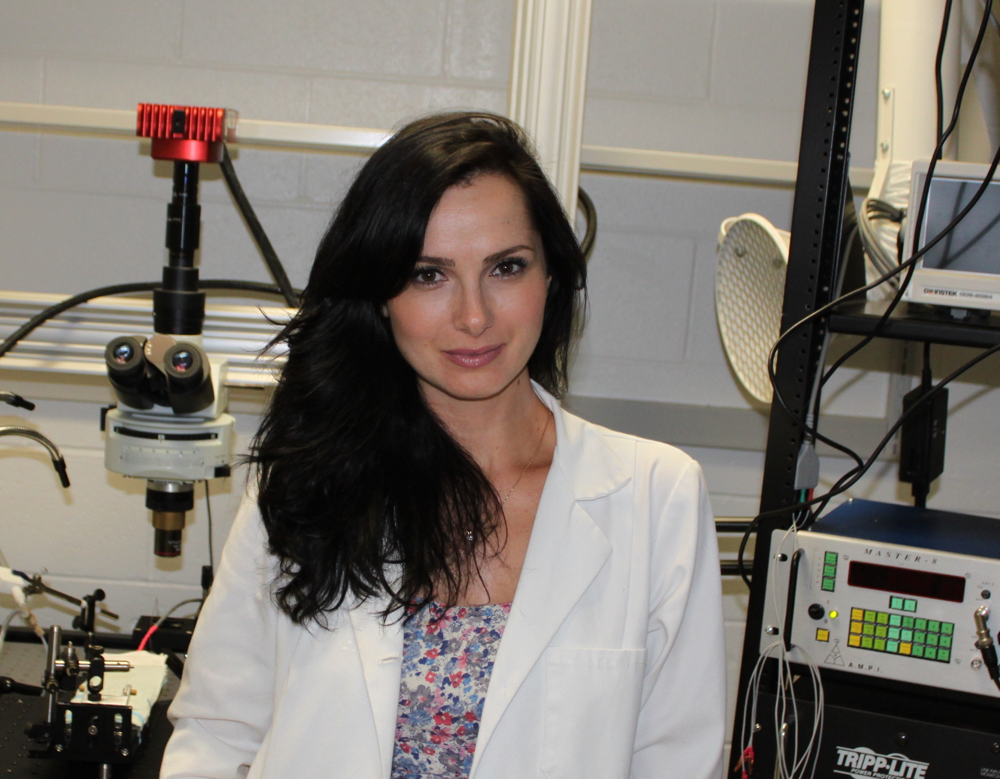
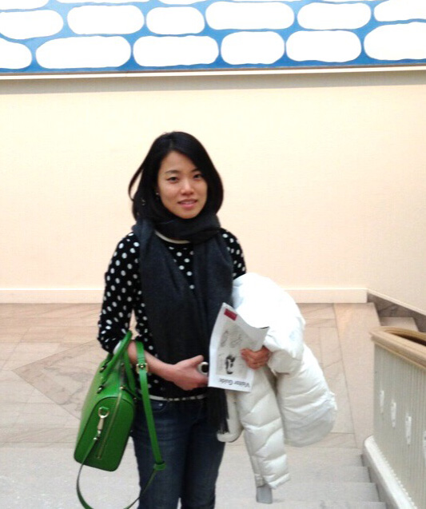
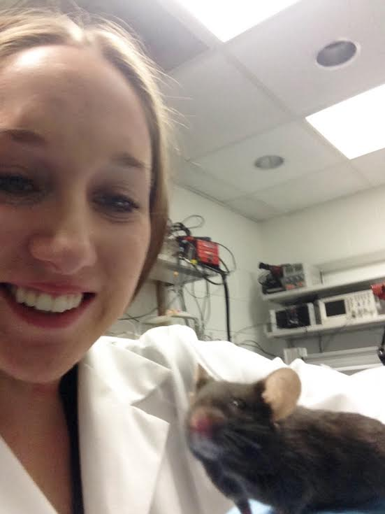
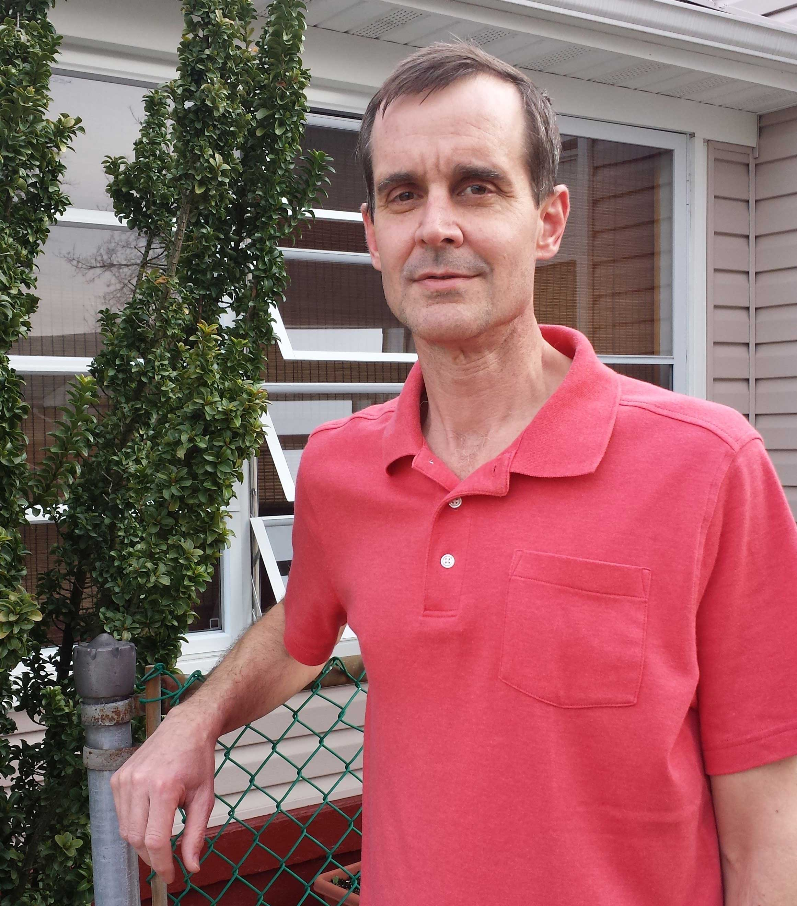

LAB MEMBERS
John McGann
Associate Professor
PhD, Neuroscience, Yale University '03
B.A. and M.S., Psychology, Yale University '98

Marley Kass
PhD Student, Behavioral and Systems Neuroscience, Rutgers Psychology

Michelle Rosenthal
PhD Student, Behavioral and Systems Neuroscience, Rutgers Psychology

Sunmee Park, PhD
Postdoctoral Associate
PhD Electrical Engineering, Brown University 2014

Jennifer Francesconi
PhD Student, Behavioral and Systems Neuroscience, Rutgers Psychology

Keith Perkins
PhD Student, Behavioral and Systems Neuroscience, Rutgers Psychology

Walt Shotwell
Laboratory Technician
Michael Bacallao
Undergraduate Researcher
Rutgers University, Class of 2016
Katelyn Sissick
Undergraduate Researcher
Rutgers University, Class of 2017
Elizabeth Kessel
Undergraduate Researcher
Rutgers University, Class of 2017
Patricia Charlemagne
Undergraduate Researcher
Rutgers University, Class of 2018
Adam Garcia
Undergraduate Researcher
Rutgers University, Class of 2018
Ilana Klein
Undergraduate Researcher
Rutgers University, Class of 2018
Lab Alumni
Lindsey Czarnecki, PhD. Graduate student in Behavioral & Systems Neuroscience, Class of 2016 (now a postdoctoral scientist at SUNY Stony Brook)
Cindy A. Fast, PhD, Postdoctoral Associate 2014-2016. (Now the Director of R & D at APOPO)
Joseph Pottackal, B.S. Cell Biology and Neuroscience, Class of 2013, Lab Technician 2013-14 (now at Yale University Interdepartmental Neuroscience PhD Program)
Andrew Moberly, B.A. Psychology, Class of 2010, Lab Technician 2010-12 (now at University of Pennsylvania Neuroscience PhD Program)
Tom Rubinstein, B.A. Psychology Class of 2012 (now at University of Pennsylvania Dental School)
Daniel Turkel, B.A. Psychology Class of 2012 (now in the Peace Corps)
Stephanie Guang, Intern, High School Class of 2012 (Now at Brown University)
Sneha Sanghvi, B.S. Biology, Boston University Class of 2010; M.S. Biomedical Sciences from UMDNJ, Class of 2011
Curran Uppaluri, Boston University Academy, Class of 2009
Pooja Rao, Boston University Class of 2009
Adam Johnson, Boston University Class of 2010